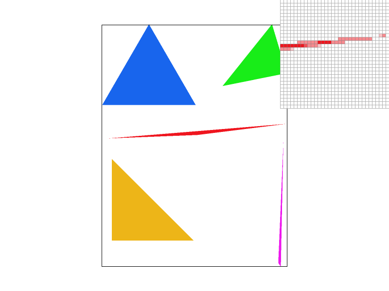
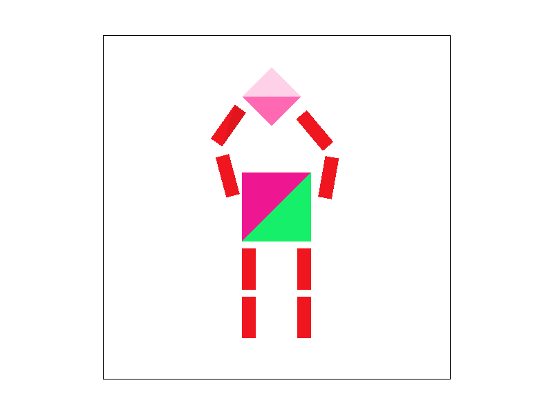
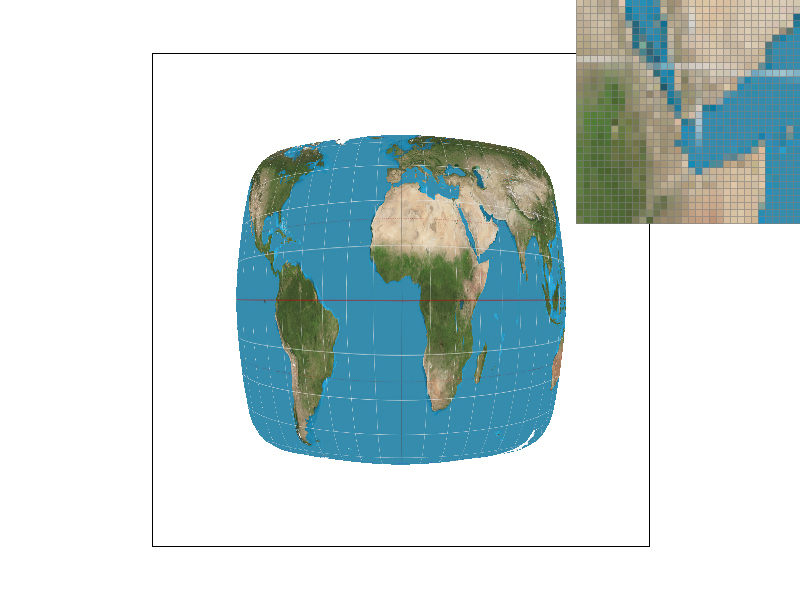
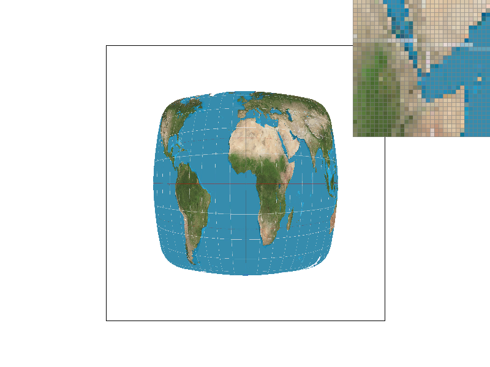
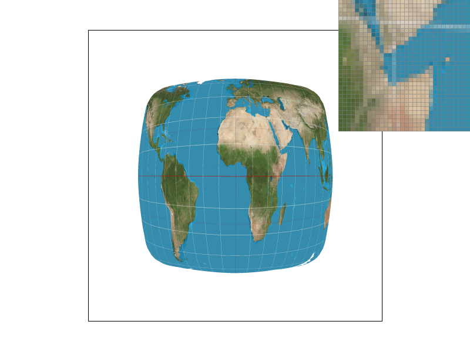
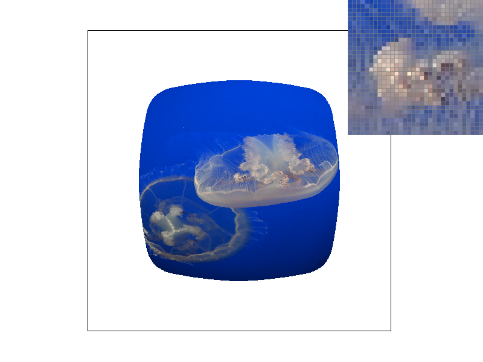
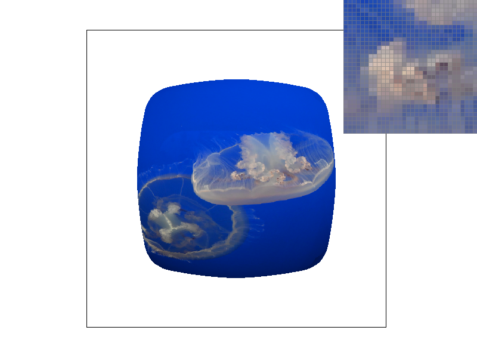
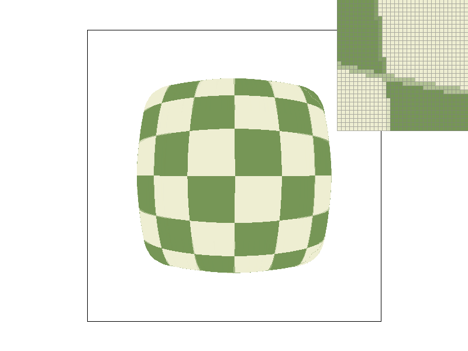
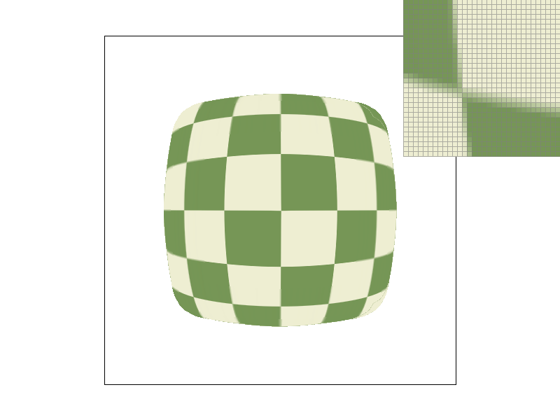

CS184 Spring 2026 Homework 1 Write-Up
Link to webpage: https://cal-cs184-student.github.io/hw-webpages-agathafels/hw1/index.html
Link to GitHub repository: https://github.com/cal-cs184-student/hw1-rasterizer-jerjit
Overview
We built a whole mini rendering pipeline, from triangle rasterization to supersampling for antialiasing,
geometric transformations, barycentric interpolation, texture mapping, and mipmap level sampling. In each section,
we learned how the continuous representation of geometry and textures is mapped to the discrete pixel representation on the screen.
The most interesting part was observing how sampling impacts image quality. Supersampling demonstrated how aliasing happens and
how averaging subpixel samples resulted in smoother edges. Barycentric coordinates made triangle interpolation easy, especially
when interpolating smoothly between colors and texture coordinates. Texture mapping and mipmapping further reinforced the idea that
image rendering is a resampling process, where the choice of sampling and filtering technique has a huge effect on the final image quality.
Task 1: Drawing Single-Color Triangles
How we rasterize triangles?
Rasterizing itself means converting a geometric shape into screen pixels. To rasterize a triangle, we start with the three vertex coordinates (x0, y0), (x1, y1), and (x2, y2) that define the triangle.
First, we compute the bounding box by finding the minimum and maximum x and y values among the three vertices. Then we round these values using floor and ceil to get integer pixel boundaries. We also make sure these values stay within the screen boundaries to prevent drawing outside the framebuffer. Next, we iterate through every pixel inside the bounding box. For each pixel, we sample at its center (x + 0.5, y + 0.5). We determine whether this center lies inside or outside the triangle by computing the three edge tests using the cross product. If the sample point lies on the same side of all three edges (all positive or all negative), then it is inside the triangle, and we fill it with color by calling fill_pixel. Then, we repeat this process for every pixel in the bounding box to fully rasterize the triangle on the screen.
Why our algorithm is no worse than checking each sample in the bounding box?
The algorithm we wrote finds the smallest rectangle that contains the triangle (the bounding box) and checks the pixels inside that rectangle. For each pixel, it simply checks whether the pixel center is inside the triangle. Therefore, the runtime is proportional to the size of the bounding box and is not worse than checking every sample within it.
Here is an example 2x2 gridlike structure using an HTML table. Each tr is a row and each td is a column in that row. You might find this useful for framing and showing your result images in an organized fashion.

|
Task 2: Antialiasing by Supersampling
Our supersampling algorithm is similar to Task 1, except that instead of rendering to the framebuffer, we render to a sample buffer. We break each pixel down into smaller subpixels based on the sample rate (4 samples means 2x2 inside each pixel). This sample is then written into the sample buffer. Then, for each subpixel, we check if it's inside the triangle and store the color in the sample buffer.
Once all the triangles have been rasterized, we calculate the average color of all the subpixels inside each pixel and render it to the framebuffer. We also altered the pipeline to resize the sample buffer whenever the sample rate changes.
The supersampling technique can be used to reduce jaggies because, instead of determining that a pixel is entirely inside or outside the triangle, we determine partial coverage. When we calculate the average color of these subpixels, it makes the edges smoother.

|
|
|

|
|
Task 3: Transforms
We wanted to make a visual effect of the cubeman taking off its head because we want the cubeman to do something unique and fun. We also changed its color to be more unique. To achieve this, we adjusted the SVG transformation groups for the arms. Specifically, we rotated the upper arm segments upward at the shoulder and then applied additional rotation and translation to the outer arm blocks to make the elbow bending. We also scale the head bigger for better proportion.
|

|
Task 4: Barycentric coordinates
Barycentric coordinates describe a point inside a triangle as a combination of the triangles' three vertices. The three values (alpha, beta, gamma) tell us how close the point is to each vertex. These three values always add up to 1.
Here, each vertex of the triangle has a different color: red, green, and blue. For every sample point inside the triangle, we compute alpha, beta, and gamma. If alpha is larger, the point is closer to the vertex with the red color, so the color appears more red. If beta or gamma is larger, the color shifts toward green or blue.
In the center of the triangle, the three values are similar so the colors blend smoothly. Using this method, we create the smooth color wheel effect.

|
Task 5: "Pixel sampling" for texture mapping
Pixel sampling is deciding what color to take from a texture image when we map it to a triangle.
For each sample inside the triangle, I computed the barycentric coordinates and used it to interpolate
the texture coordinates (u,v). I then create a SampleParams struct
and call tex.sample(sp) to get the texture color. In Texture::sample(),
the sampling method is selected based on sp.psm, which switches between nearest
and bilinear sampling.
In nearest sampling, we convert the UV coordinate into a texel index using
floor(u * width) and floor(v * height), clamp it to valid bounds,
and return that single texel color. This method is simple and fast, but when the texture
is magnified it can look blocky because each sample snaps to one texel without blending.
From the screenshots, nearest sampling at 1 sample per pixel shows very clear square texel
boundaries and abrupt color changes. Increasing the sample rate to 16 smooths the triangle
edges, but the texture itself still looks blocky because nearest sampling does not interpolate
between texels.
In bilinear sampling, I find the four surrounding texels and use the fractional offsets (s, t) to interpolate between them (two horizontal lerps followed by one vertical lerp). This blends neighboring texels, producing smoother transitions and reducing visible block boundaries, though it can appear slightly blurrier when magnified. From the comparison, bilinear sampling at 1 sample per pixel already looks smoother than nearest because color transitions are gradual instead of abrupt. When using bilinear with 16 samples per pixel, both the triangle edges and the texture transitions appear smoother, producing the best overall result. The difference between nearest and bilinear is most noticeable when the texture is magnified or when UV coordinates fall between texel centers, because nearest sampling causes sharp jumps between texels while bilinear blends neighboring texels.
|

|
|
|

|

|
Task 6: "Level Sampling" with mipmaps for texture mapping
Level sampling, or mipmapping, is an anti-aliasing technique used in texture mapping to prevent visual artifacts like shimmering when high-resolution textures are rendered on small or distant objects. When a pixel covers a large area of a texture, basic point-sampling skips over fine details. To fix this, we use a pre-computed sequence of progressively lower-resolution textures (mipmaps). Level sampling evaluates how fast the texture coordinates change across screen pixels to determine which mipmap level's resolution best matches the pixel's footprint, ensuring a smooth, pre-filtered color is applied.
We implemented this by calculating the texture coordinate gradients within the rasterization loop. For every pixel at (x, y), we calculated the barycentric coordinates and interpolated the UVs for that point, as well as for the adjacent pixels at (x+1, y) and (x, y+1). Passing these into Texture::get_level, we computed the difference vectors between them and scaled them by the full-resolution texture size. By taking the maximum length of these gradient vectors (let's call it L), the continuous mipmap level is calculated simply as log2(L), with appropriate clamping to prevent undefined math errors like log2(0) or out-of-bounds array access.
Finally, we updated the sampling logic to utilize this calculated level based on the user-selected mode. For L_ZERO, it ignores the calculation and samples directly from the base level. For L_NEAREST, it rounds the continuous level to the nearest integer and samples from that specific mipmap. For L_LINEAR (trilinear filtering), it identifies the two adjacent integer levels using floor and ceil, samples a color from both, and linearly interpolates between them based on the fractional weight of the computed level. This produces the smoothest visual transitions as objects scale in depth.
Looking at the following photos, the jellyfish photo displays the most dramatic difference when experimenting with Level sampling. Zero sampling on parts of the jellyfish result in “harsh” gradients, due to sampling from the original image directly, while Nearest sampling “averages” values in groups from a mipmap level that creates a softer “blur” effect in the image.
On the other hand, the grid pattern displays the most dramatic difference when experimenting with Pixel sampling. Nearest sampling results in “jaggy” edges where the lines curve, while Linear sampling softens the edges with a soft blur by averaging over UV coordinates, creating a smoother gradient
Texture 1
|
|

|
|
|

|
Texture 2
|
|
|
|

|

|